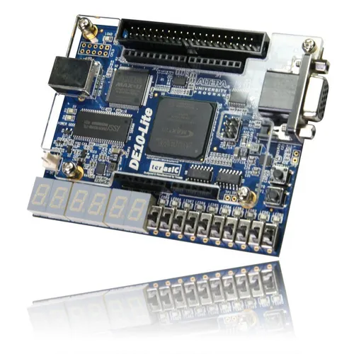
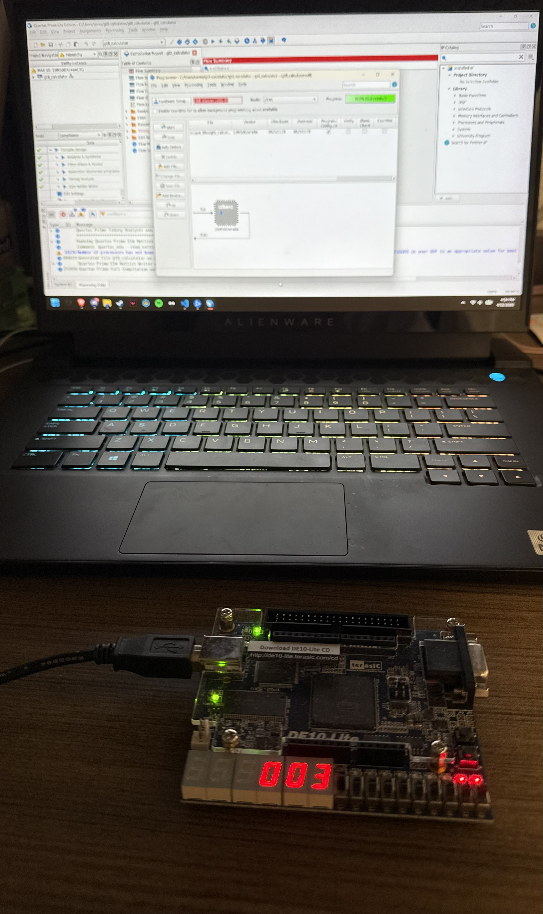

Bacter.ai predicts antibiotic resistance across 10 antibiotics in under 60 seconds from raw FASTA input, replacing a 3-day laboratory process. The project sits at the intersection of machine learning, bioinformatics, and clinical decision support with direct implications for patient outcomes.
I contributed both to the backend ML pipeline and the entire frontend interface, giving me end-to-end ownership of a real software product.
To add images: replace each placeholder comment with an <img> tag pointing to your screenshot file
The GT-8 Calculator is an 8-bit arithmetic logic unit designed entirely in Verilog HDL on an Intel DE10-Lite FPGA. Rather than using behavioral shortcuts, the entire design was built from the gate level up — starting with individual logic gates and progressing through a full ripple carry adder to a complete ALU supporting six operations. This project was my first serious exercise in the kind of bottom-up hardware design thinking that VLSI work requires.
A key part of the project was writing a comprehensive self-checking testbench in ModelSim to validate correctness across all operations and edge cases, including signed overflow, maximum-value carry propagation, and two's complement subtraction.

